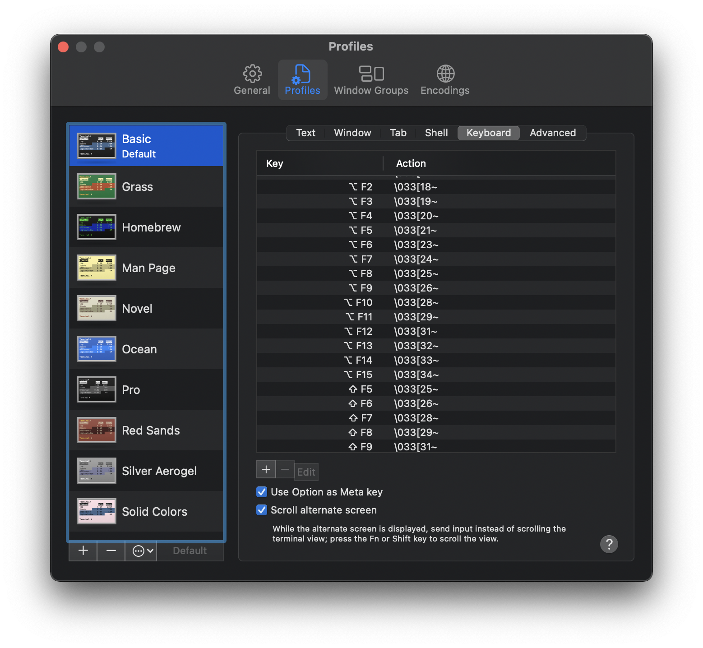
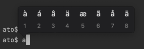

M1 MacBook Proを新規でセットアップした時の雑記（随時更新）
7年ぶりに更新。このキーボードとインターフェース、おかえり、という感じ。 pic.twitter.com/LSY1TxfVPV
— Ato Araki (@atotto) November 6, 2021
Homebrew
/bin/bash -c "$(curl -fsSL https://raw.githubusercontent.com/Homebrew/install/HEAD/install.sh)"
echo 'eval "$(/opt/homebrew/bin/brew shellenv)"' >> /Users/$USER/.localrc
imagemagick
コマンドラインで画像編集が早いので、やっぱり必要
brew install imagemagick
graphviz
plantumlなんかを生成するのに使う
brew install graphviz
git
新しいもの使う
brew install git
$ git --version [~]
git version 2.35.0
$ /usr/bin/git --version [~]
git version 2.30.1 (Apple Git-130)
jq
jsonごにょごにょするときに必要
brew install jq
Emacs
編集処理は結局これが手早い。
Wireshark
ネットワークの調査で必要ですね
Xquartz
X11飛ばしたくなるので未だに使うよ
https://www.xquartz.org/releases/XQuartz-2.8.1.html
tailscale
便利すぎる
Terminal: Metaキーを使えるようにする
Metaキーがないと生きていけない
- Terminal -> Preferences -> Profiles -> Keyboard
Use Option as Meta keyにチェックを入れる

キーリピートを有効化
aを押し続けるとこうなる↓

以下でキーリピートできるようになる:
defaults write -g ApplePressAndHoldEnabled -bool false
元に戻す場合は:
defaults write -g ApplePressAndHoldEnabled -bool true